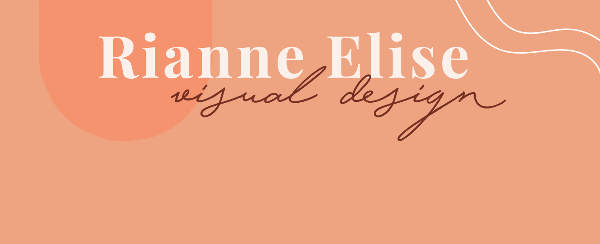
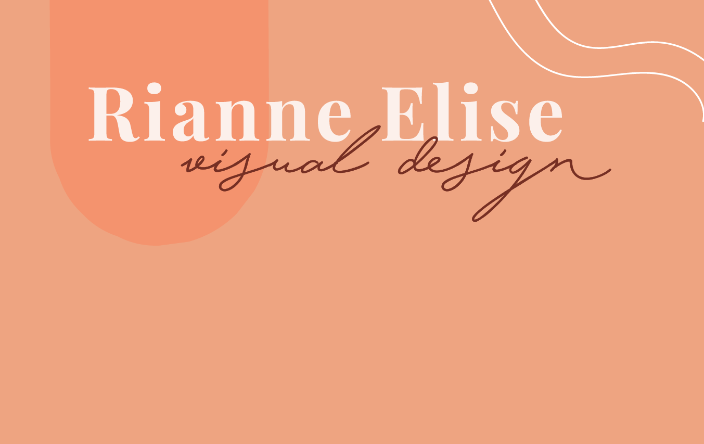
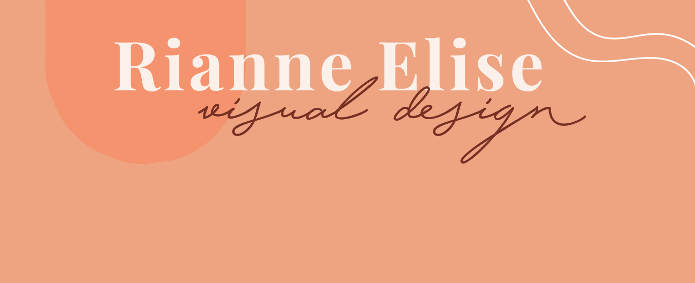
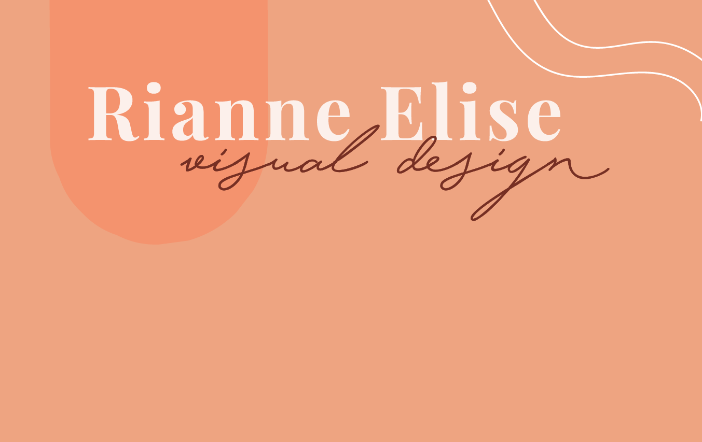
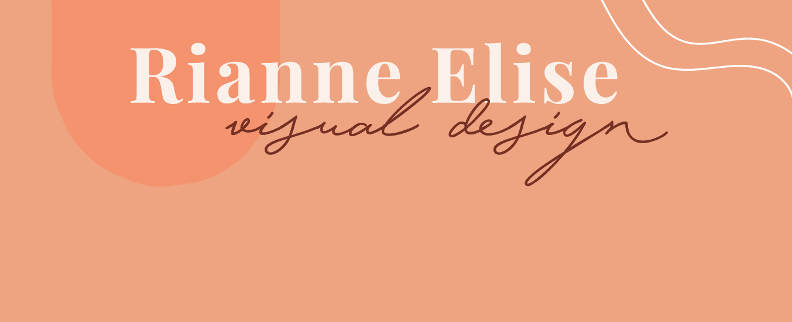
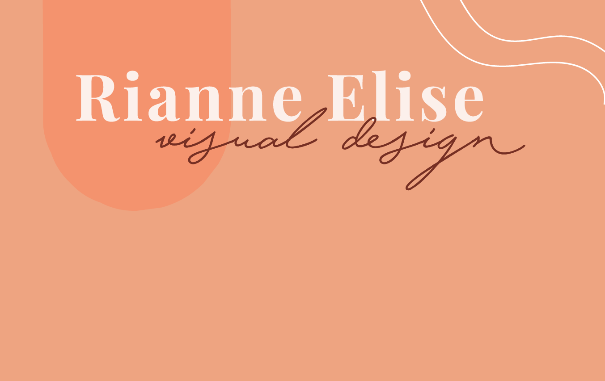
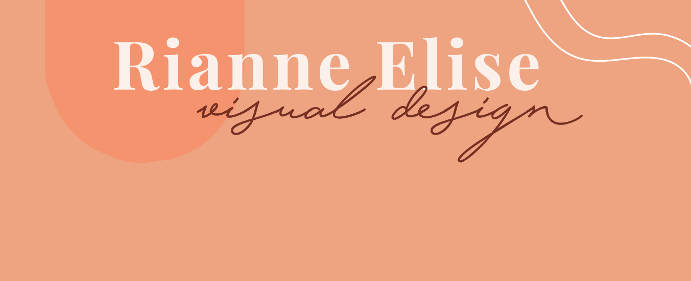
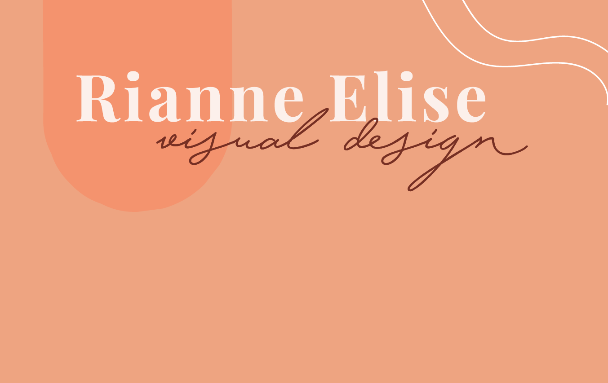

Hi there! Ik ben Rianne Hoenderdos, 19 jaar oud, derdejaars Communication & Multimedia Design (CMD) student aan de Hogeschool van Amsterdam (HvA) en ik woon in Aalsmeer.
Creativiteit zit van jongs af aan al in mijn bloed; dit komt vaak van pas tijdens mijn studie en andere bezigheden in mijn vrije tijd.
Achter elk ontwerp zit een verhaal. Mijn doel is om dat verhaal zo krachtig mogelijk te vertellen: niet alleen met woorden, maar vooral ook door de vormgeving.
Tijdens mijn studie heb ik een aantal toffe projecten mogen doen. Ik heb daar veel van geleerd en ben trots op het eindresultaat.
Naast mijn studie ontwerp ik af en toe voor opdrachtgevers. Ook gebruik ik mijn ontwerpvaardigheiden om enkele non-profit organisaties te helpen als ze iets nodig hebben gerelateerd aan visual design. Hiernaast vind je een deel van mijn projecten.